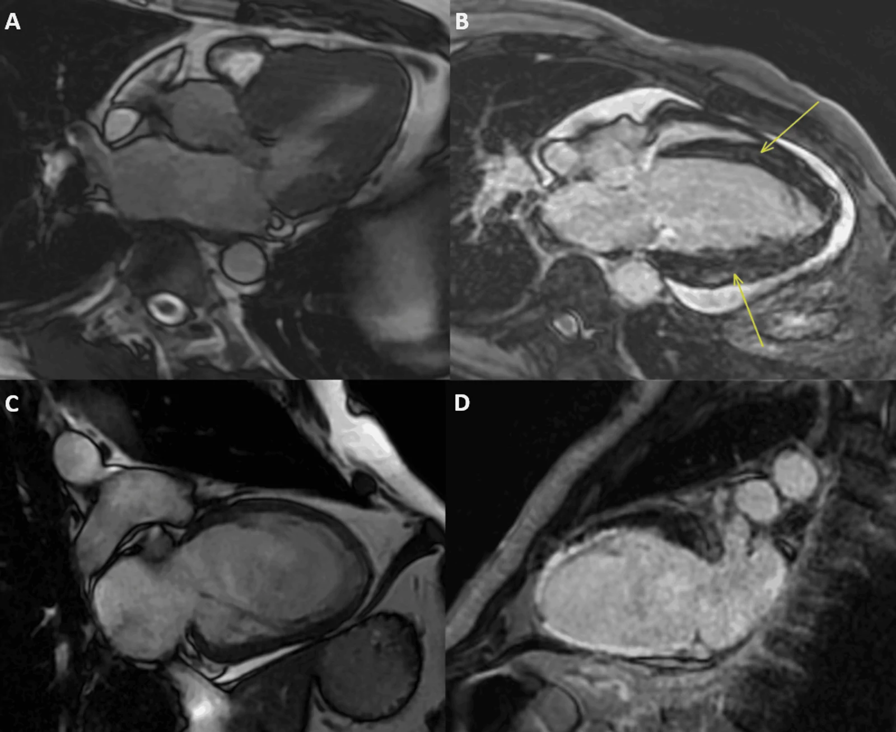

820 — MRI tim: LGE xuyên thành vs giữa/dưới thượng tâm mạc / Cardiac LGE
Tags: pattern:LGE-cotim vung:cotim score:Lake-Louise
Mức chắc chắn (certainty): tổng hợp y văn (literature synthesis) — nhóm tự biên từ y văn mở, chưa gắn ca nguyên văn đơn lẻ.
1. Tổng quan — thiếu máu từ trong ra, viêm từ giữa ra
- Nhồi máu: tắc vành → chết từ dưới nội tâm mạc lan ra ngoài theo lãnh thổ vành — TẠI SAO LGE dưới nội tâm mạc/xuyên thành + theo LAD/RCA/CX = thiếu máu: vùng xa nhất tưới máu chết trước.
- Viêm/sarcoid/DCM: tổn thương kẽ/không thiếu máu — TẠI SAO giữa thành/dưới thượng tâm mạc, không theo lãnh thổ: viêm lan theo mô kẽ, chừa nội mạc.
- Lake Louise 2018 (viêm): phù T2 + tổn thương T1 (LGE/ECV) — cần cả 2; ECV thường 25 ± 4%; TI sai = cơ không đen = giả LGE.
2. Gamut đau ngực + men tim (Gamut)
- LGE dưới nội tâm mạc theo lãnh thổ: nhồi máu — tái thông + sống còn (transmural > 50% khó hồi phục!).
- LGE giữa/dưới thượng + phù T2: viêm cơ tim — nghỉ + NSAID/colchicine + tránh thể thao 3–6 tháng.
- LGE lan + ECV cao + dày: amyloid/sarcoid/DCM — sinh thiết + điều trị căn nguyên.
- Không LGE + phù: Takotsubo/viêm sớm — theo dõi + lặp lại.
3. Bảng so sánh phân biệt (ma trận đối chiếu)
| Thực thể (entity) | Hình ảnh điển hình | Chốt vào (rule-in) | Chốt loại (rule-out) | Gợi ý xác nhận |
|---|---|---|---|---|
| Nhồi máu | LGE nội mạc/xuyên thành theo lãnh thổ vành | Theo LAD/RCA/CX + dưới nội mạc | Giữa/dưới thượng → viêm | Tái thông + viability |
| Viêm cơ tim | LGE giữa/dưới thượng + phù T2 (Lake Louise) | Không lãnh thổ + phù + men tim | Xuyên thành → nhồi máu | Nghỉ + kiêng thể thao |
| Sarcoid/DCM | LGE giữa/vách + ECV cao + block | Dẫn truyền + ngoài phổi | Theo lãnh thổ → thiếu máu | PET + sinh thiết |
| Takotsubo | Phù + không LGE + bóng chóp | Stress + hồi phục + không LGE | LGE dày → viêm/xơ | Theo dõi + ức chế |

(A) cine; (B–D) LGE/viêm các mặt cắt. Nguồn: Raja et al., Cureus 2026 Fig. 1, CC BY 4.0.4. Protocol MRI tim
- Cine + T2/STIR + LGE (TI chuẩn) + T1/T2 mapping + ECV khi viêm/cơ tim/nhồi máu không rõ; TI đúng = cơ đen hoàn toàn.
flowchart TD
A[Nghi viêm/nhồi máu] --> B{LGE ở đâu?}
B -->|Nội mạc + lãnh thổ| C[Nhồi máu: tái thông]
B -->|Giữa/dưới thượng| D[Viêm: Lake Louise]
5. Cạm bẫy
- TI sai giả LGE toàn bộ — PSIR + kiểm tra cơ đen mới đọc.
- Amyloid tưởng nhồi máu — LGE lan + khó null + ECV rất cao là sinh thiết.
- Viêm khỏi vẫn LGE tồn dư — LGE là sẹo, phù T2 mới là hoạt tính.
6. Tự lượng giá — Blind Quiz
Ca 1 — Đau ngực + troponin (+), vành bình thường. Đọc CMR.
- Hỏi: LGE ở lớp nào? Nhồi máu hay viêm? Kiêng gì?
Bấm để hiện đáp án
- Dấu hiệu (findings): ngấm giữa/dưới thượng tâm mạc + phù, không theo lãnh thổ vành.
- Chẩn đoán (diagnosis): viêm cơ tim (Lake Louise) — nghỉ + kiêng thể thao 3–6 tháng (khác nhồi máu nội mạc theo vành).
- Nguồn: Raja et al., Fig. 1, CC BY 4.0.
Ca 2 — LGE xuyên thành LAD + mỏng thành: còn sống không? (Bảng mục 3.)
Bấm để hiện đáp án
- Sẹo transmural: không hồi phục sau tái thông (viability < 50% mới cứu được).
Bài liên quan chéo
- 800 – Tổng quan Tim mạch
- 810 – Vành CAD-RADS (thiếu máu)
- 075 – Màng tim (viêm màng)
Không dùng để chẩn đoán độc lập khi chưa có người hướng dẫn.